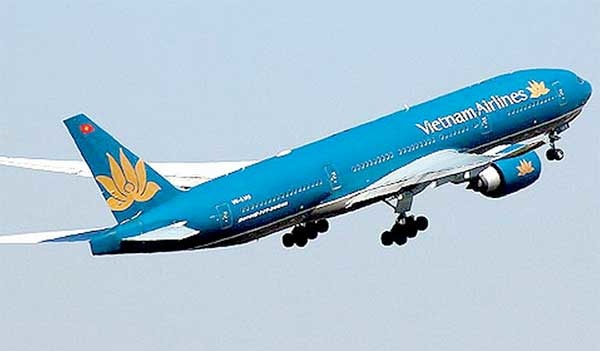

DakLak Travel xin giới thiệu những loại hình vận chuyển phục vụ cho hành khách

Máy bay được thống kê là phương tiện giao thông an toàn nhất. Với vận tốc di chuyển đến 800 km/h, cách mặt đất hàng nghìn mét, máy bay chính là phương tiện vận chuyển nhanh nhất. Nó có thể giúp chúng ta tiết kiệm một khoảng thời gian khá lớn, đưa bạn đến mọi vùng miền và lãnh thổ trên thế giới. Và điều đặc biệt đây là phương tiện được đánh giá là an toàn nhất mọi thời đại. Bởi từ ghế ngồi, không khí trong cabin, đến tuyến đường và độ cao của máy bay, đến đội ngũ phi hành đoàn,… đều được tính toán dựa trên sự cân nhắc cẩn thận về mặt an toàn..
Ngoài máy bay thì xe khách cũng là 1 loại phương tiện phù hợp cho những tour du lịch nhóm gồm đông thành viên.
Thật ra, để có cảm xúc chân thật nhất trong chuyến đi thì duy chỉ có xe máy là hoàn hảo nhất khi đưa cả tâm hồn người lái, người đi cùng hòa quyện ở nơi đến chứ không hẳn là giam mình trong khối hộp sắt với 4 khung của sổ. Khi lái xe máy, bạn sẽ cảm nhận được sương gió đọng trên mi mắt, nhưng cơn gió lạnh sương sương luồn kẽ áo, cảm nhận rõ rệt những khung cảnh xunh quanh, những con đường uốn lượng một cách chân thực, cho cảm giác tự do khó diển tả. Đi xe máy có thể dễ dàng khám phá những hang cùng ngõ hẻm nơi mà ô tô buộc phải lùi bước, chưa kể có thể ngắm nhìn cảnh đẹp bao la, có thể tranh thủ dừng lại làm tấm ảnh kỉ niệm hay lái xe mệt có thể tấp đại vào hàng nước để nghĩ mệt không bị gò bó bởi việc tìm chỗ đậu xe, cũng như tiếc hùi hụi khi không thể lưu lại khoảng khắc. Nhưng chắc chắn nhất là cảm giác bo cua, trải nghiệm qua từng con đèo, vượt qua những con dốc khó đấy mới chính là cảm xúc phiêu mà bất kì phượt thủ chân chính nào cũng muốn được một lần thử trong đời.